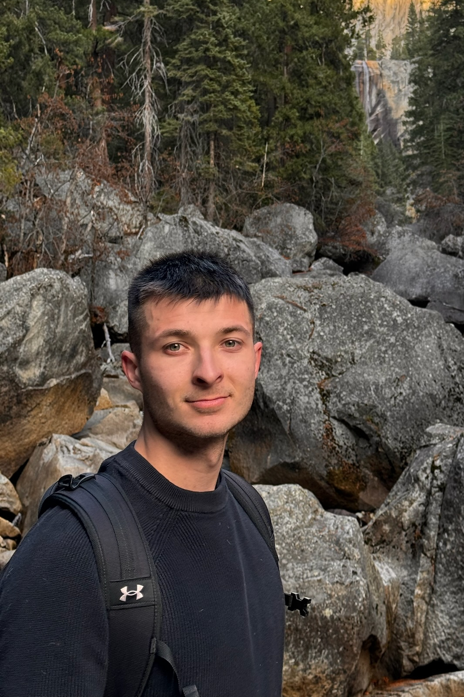

Konrad Szafer
I am currently a research assistant at ETH Zurich, where I’m working on Continual Learning and World Models, drawing inspiration from the way the brain learns.
Previously, I interned at Hugging Face, contributing to the LLM Evaluation team. I also spent half a year at CMU as a research assistant at AutonLab, where I worked on time-series foundational models and model evaluation with limited labeled data.
I graduated from Poznan University of Technology with a BSc in Automatic Control and Robotics and an MSc in Artificial Intelligence, focusing both of my theses on representation learning and foundational computer vision models—covering 2D and 3D respectively.
